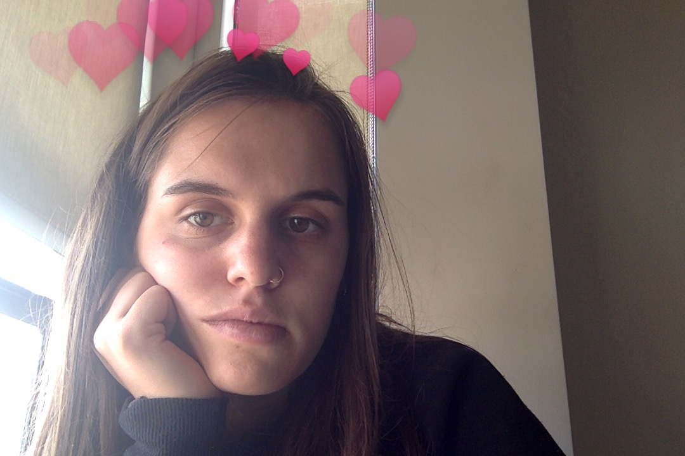

September 27, 2015 | 10:13 AM | San Francisco, CA
Not so sure about this new life, I don't feel comfortable being so alone, I used to be so dependent on the people around me and now I am lonely, but at least independnt. Mad told me that Chris and them didn't become friends until Haloween so here's hoping I meet my lifelong friends by then. Doesn't seem like the oulooks are great.